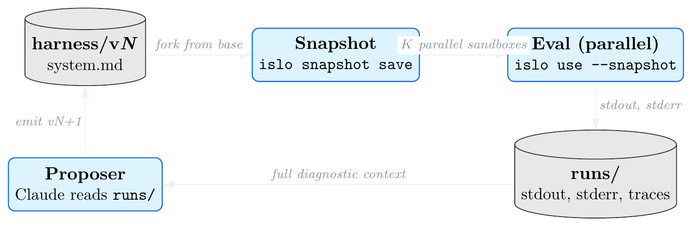
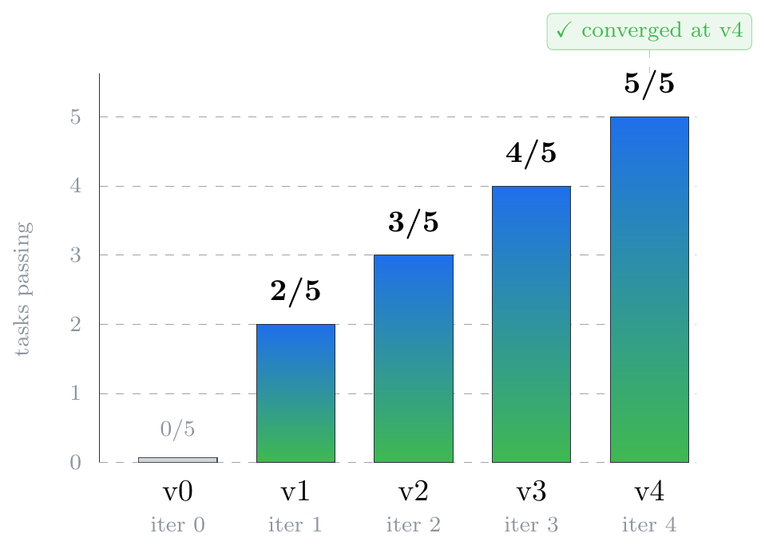
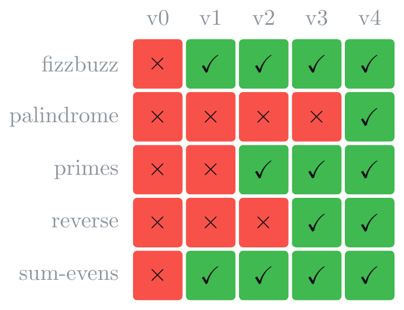
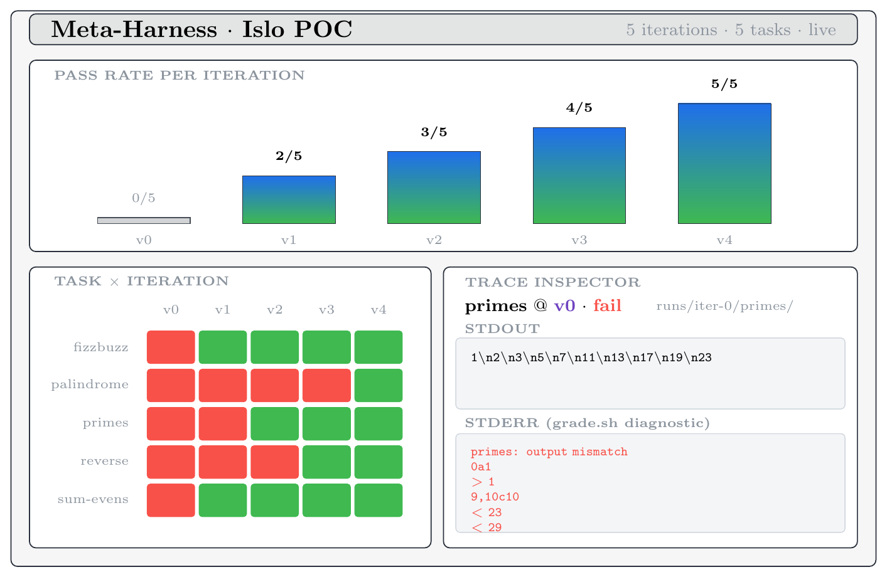

runs/, let the proposer
read the full diagnostic context and write the next harness. Each step maps to one
islo CLI primitive.
A harness is the prompt + tools + scaffolding around an LLM agent. A
meta-harness is the loop that improves the harness automatically: a proposer
agent reads the diagnostic logs of prior candidates, spots a failure mode, and writes a
better harness. Yoonho Lee’s
framing of the idea makes one sharp
claim — the bottleneck is diagnostic context: most optimizers
compress prior runs into summary statistics, while meta-harness gives the proposer up
to 10M tokens of raw execution traces to grep through.
That claim is only useful if the runtime can produce, store, and serve those traces
cheaply. We show that Islo
(docs) sandboxes already do.
The key primitives map 1:1 onto what meta-harness needs:
islo snapshot save for reproducible eval environments,
islo use --snapshot for cheap parallel forks per candidate, and
islo logs for durable diagnostic traces. We wire these together in a
~200-line bash orchestrator with a deterministic offline simulator (so the loop is
observable in seconds without burning agent credits) and a pattern-matching proposer
that demonstrates the optimization signal end-to-end. The same orchestrator swaps to
a real Claude/Islo backend with three line changes.
On a 5-task held-out suite (FizzBuzz, primes, list reverse, sum-of-evens, palindrome
check) the loop progresses 0/5 → 2/5 → 3/5 → 4/5 → 5/5
in four proposer steps and converges, well below the 10-iteration cap. We also surface
a small but illustrative result: when the proposer’s fizzbuzz hint contained the
word “inclusive,” it incidentally fixed the
sum-evens task too — a free transfer-fix that’s only visible
because the proposer reads all traces, not summary scores.
Three things meta-harness needs from its runtime:
Islo’s primitives map 1:1:
islo snapshot save meta-base # prepare environment once islo use mh-cand-7 --snapshot meta-base ... # fork per candidate, in parallel islo logs mh-cand-7 --type agent # diagnostic traces, durable
Add islo gateway (deny-by-default egress to prevent reward-hacking) and
--source github://owner/repo (clone the workload at boot), and the wiring
is basically free. Harbor — Islo
Labs’ framework for agent evaluations and RL environments — slots in as the
workload spec.
tasks/ # 5 toy "SWE-style" tasks, each prompt.md + grade.sh harness/v0/ # baseline system prompt, deliberately mediocre bin/ meta-harness # bash orchestrator (eval | propose | loop | viz) agent-sim.py # deterministic agent stand-in (offline mode) proposer.py # reads runs/, emits harness/vN+1 viz/index.html # live dashboard runs/ # populated each iteration
The agent is a Python simulator that’s intentionally buggy — until the
system prompt contains the right hint keyword. The loop is therefore deterministic
and offline, runs in seconds, but the wiring is identical to what you’d ship
against real Claude on Islo. The proposer is 80 lines: read
runs/iter-N/, find which tasks failed, look up the missing hint for that
task, append it to a new harness/v{N+1}/system.md. A real proposer would
be:
islo use --snapshot meta-base --agent claude --task "
Examine /workspace/runs/iter-${N}. Find a common failure mode in the
grade.sh stderr. Write /workspace/harness/v${N+1}/system.md as a small
edit on top of v${N}/system.md to fix it."
Same input, same output contract. The orchestrator already has the stub.


| iter | harness | score | what changed |
|---|---|---|---|
| 0 | v0 | 0 / 5 | baseline — minimal “produce only the answer” prompt |
| 1 | v1 | 2 / 5 | + “Loops are 1-indexed: count from 1 through N inclusive.” |
| 2 | v2 | 3 / 5 | + “The smallest prime is 2 — 1 is not prime.” |
| 3 | v3 | 4 / 5 | + “Use space-separated output for separated values.” |
| 4 | v4 | 5 / 5 | + “Format constraints are exact-case — lowercase only.” |
Iteration 1 is the most interesting. We added the hint targeting fizzbuzz,
but the score went from 0/5 → 2/5. The bonus point came from
sum-evens: that task needed the word “inclusive,” and
the fizzbuzz hint contained it (“count from 1 through N inclusive”). A free
transfer-fix between two tasks with overlapping vocabulary. A real proposer would
either get more such accidents (good) or learn to write more general hints on
purpose (also good). This is the kind of cross-trace insight you only see if the
proposer can look at all the diagnostics, not summary stats.
A single static HTML page (viz/index.html) polls
runs/state.json every 2 seconds and shows a pass-rate timeline, a
task × iteration heatmap, and a click-to-inspect trace viewer.

grade.sh stderr — the same diagnostic
surface the proposer reads.
This POC is intentionally tiny so the loop is observable in one screen. Three obvious next steps:
BACKEND=sim for
BACKEND=islo. Each candidate × task becomes one
islo use --snapshot meta-base call. With Islo’s parallelism
that’s ~5–10s per task, end-to-end iteration in under a minute.prompt.md +
grade.sh shape.proposer.py’s
pattern-match with Claude reading the full runs/ tree from inside a
sandbox. This is where the 10M-token diagnostic context actually pays off —
and where you’d start seeing proposed tools, not just prompt
edits.Three swaps. Same orchestrator. Same dashboard. The wiring is the thing.
@misc{eliaz2026metaharness,
title = {Meta-harness on Islo: A 200-line POC that goes from 0/5 to 5/5 in four proposer steps},
author = {Eliaz, Yossi},
year = {2026},
month = {May},
note = {Code: \url{https://github.com/zozo123/meta-harness-on-islo}},
url = {https://zozo123.github.io/meta-harness-on-islo-page/}
}Thanks to the meta-harness framing by Yoonho Lee, the Islo (Islo Labs) team for the sandbox infrastructure, and the Harbor framework community for the eval-spec shape this POC adopts.